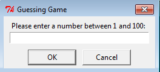
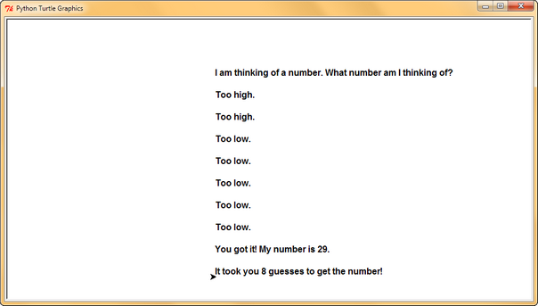

Marking Scheme
- Please submit the turtle graphics version of your game, nothing else.
- Game preparation (20 marks)
- Generate and store the answer, which is a random number (10 marks)
- Get the guess number from the player and store it (10 marks)
- You can assume the user will only enter integer numbers
- Range verification (10 marks)
- This ensures the guess from the player is within the range from 1 to 100
- For example, the user might enter numeric numbers like 0, 101, etc
- It is not required to handle any non-numeric inputs or an input of nothing
- For example, you can assume the user will not enter any words e.g. "twenty"
- Display a suitable message (e.g., Please enter a number between 1 and 100) if the player enters a wrong number
- Here's an example with 2 wrong input numbers:

Click to see the image in full size
- Guessing hints (30 marks)
- If the user's guess is larger than the target, output "Too high" (10 marks)
- If the user's guess is smaller than the target, output "Too low" (10 marks)
- If the user's guess is equal to the target, output "You got it! My number is X.", where X is the correct number (10 marks)
- For example, if the target number is 29, the output is "You got it! My number is 29."
- Loop until the guess is correct (10 marks)
- The program repeatedly asks the user to enter their guess
- Count the number of guesses (10 marks)
- This shows the number of guesses the player has tried, including wrong inputs and the correct guess
- For example, if you have 2 wrong input numbers (e.g. 900, 101), 3 wrong guesses, and 1 correct guess, the total number of guesses is 2 + 3 + 1 = 6
- This shows the number of guesses the player has tried, including wrong inputs and the correct guess
- Using Turtle graphics (20 marks)
- The input box should show clear instructions and allow the user to input a guess (10 marks)

Click to see the image in full size - The display of text must be shown clearly on separate lines (10 marks)
- You should not display overlapping text messages
- If the user keeps getting the answer wrong, the messages will eventually go out of the window
- You do not need to expand the window size if the messages go out of the window
- You can assume the user gets the answer within 10 guesses
- In other words, you should use an appropriate font size to display the text messages up to 10 guesses
- Here's an example with 8 guesses:

Click to see the image in full size
- The input box should show clear instructions and allow the user to input a guess (10 marks)
- Enter your name and student ID number at the top of your Python code using a comment
e.g.# Done by Chan, Tai Man. SID: 01234567- This helps to confirm this is your work
{kind=link}
{kind=link}
Submission Information
- Check your work before you submit it
- Using the marking scheme, you can carefully check your work before you hand it in
- You should be able to get 100% for your lab work
-
Submit your work before the deadline
- You won't be able to submit anything after the deadline
- It is a smart idea to hand in your work days before the deadline!
-
Make sure you submit the correct file, not a wrong file
- You can download your most recent submission from your Canvas Submission page
- Then you can check exactly what you handed in
- If you find you have submitted something which is not appropriate, you can submit a corrected file
- You can only do this before the deadline
- You can download your most recent submission from your Canvas Submission page
- What is your exact deadline?
- You get 5 days after the teaching day of your registered lab to submit your work
- The dates/times are shown below, using Hong Kong Time
-
Here are the exact deadlines:
The Weekday of your Registered Lab Lab session Deadline Date and Time Link Thursday labs LA1 07 March 2022 Monday 23:59
08 March 2022 Monday 23:59
Note: Fixed a mistake on this deadlineLA1 Submission Wednesday labs LA2 08 March 2022 Tuesday 23:59
Note: This deadline remains the same to avoid the deadline jumping ahead for 24 hours due to the mistakeLA2 Submission